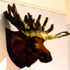

SBS//Given that one of the principal objectives of noise was to allow young people in wider communities the opportunity for a voice in popular media, what better partner is there than SBS? The national special broadcaster's TV, radio and online tentacles were noisily extended during October - check the feature below to read more about the sounds, artists and where they appeared on SBS and noise. |
|
|
|  | feature //
|
| | ALL NOISY ON THE SBS FRONT
by // Matt Blackman
"I want to create in whatever form I choose, to express myself," says artist Ben Whitaker ~ "This, to lots of people, is surprisingly Australian, but natural and essential to me - I coined the ...read more |
more features |
|
| | creative stuff //

| | DJ Design and DJ Trent, Guest Alchemists.
by // DJ Design _
Some say we're loud - we like to think that we're proud. ...check it out |
|

| | Kate Rohde
by // Kate Rohde
My most recent work involves constructing a room that resembles a cabin..
...check it out |
|
| | elle rollo, Guest Alchemist (SBS Radio).
by // elle rollo
I want people to realise that Drum & Bass isn't just dark ...check it out |
more stuff |
|
creative people //

| | Marianne Mettes
I have been creating music all my life.
now at age 15, ...read more |
|
| | Stephen Easom
I'm 25, and studying B. Media at Macquarie University
I study, ...read more |
|
| | Kris Bulanyi
In my session you can expect to be hearing trance, house, anthems.. ...read more |
more people |
|
| | highlights and links //
Quick Guide
For background on the October 2001 festival go to About. To check out the 25+ plus online projects, take a look out our Projects page. To find out what else was went on in noise, take a look at our Festival Guide. |
Wanna make some noise?
It's not to late to enter the noise festival. Check out the True Tales of Love and Hate zine project. Open now to all young Australian creatives. Click here for all the info. |
Even more noise
Got a thing for Flashion? Check out the animated moves being made by noise Flash artists. Digital art more your thing? Get arty in the Online Gallery. What's on the radio? Check out the ABC Radio and SBS pages here at noise. |
|
|
| |
|